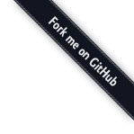
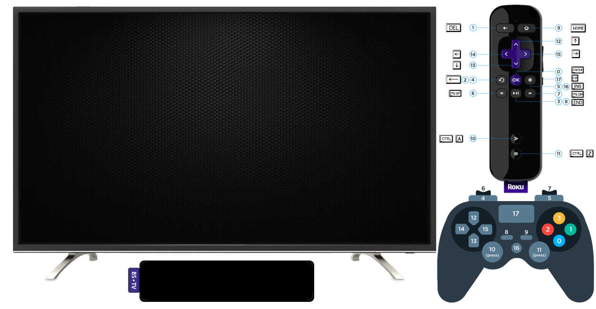
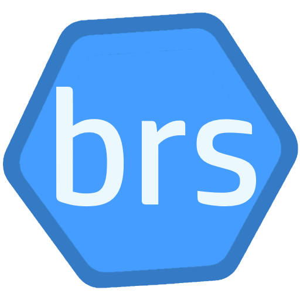
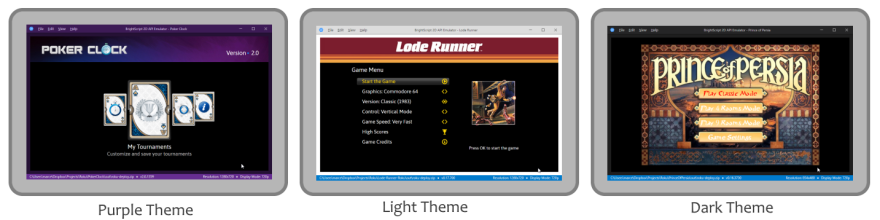

BrightScript Simulation Engine– Choose how you want to start by clicking one of the buttons: "In Browser", "Full Screen", or "Touch Mode".
– Navigate the home screen using your keyboard, a gamepad, or screen controls (in touch mode), and select any app to run—just like on a Roku device.
– You can also run your own code (.zip, .bpk, or .brs) using the purple button to sideload your app.
– In Browser mode, you can make the simulator full screen by double-clicking the display canvas or clicking the fullscreen button (bottom right of the display). In Touch mode, use your browser's shortcut (e.g., F11 on Windows).
– Check the image beside the TV to learn which keys and gamepad buttons are mapped to the Roku remote control.
As a BrightScript developer since 2012, I always wanted a way to test my code without needing a Roku device—such as during a long flight or in places without any wireless network available. The solution was to develop a simulator for the platform. In 2019, I learned about the project brs, an open source command line interpreter for BrightScript created by Sean Barag and his Hulu team. I immediately saw that this project was the missing piece to make my simulator a reality!
I forked the repository and started collaborating to the project, sending pull requests so the interpreter would have the minimum set of components needed for my work. Soon, I developed a successful proof-of-concept using HTML5 Canvas. After a month of nights and weekends studying TypeScript/JavaScript and exploring various options to overcome different challenges, I finally created a working simulator prototype. I've been improving the simulation engine ever since. This website is based on the latest alpha version, which brings compatibility with the BrightScript language up to Roku OS 15 and experimental SceneGraph support.
The brs-engine is developed in TypeScript and published as an NPM package. The package is bundled as the following collection of Webpack JavaScript libraries:
| Library File | Description |
|---|---|
libs/brs.api.js | The Engine API library to be imported and used by the applications hosting the Simulator. |
libs/brs.worker.js | A Web Worker library that runs the language interpreter in a background thread on the browser platform. |
The worker library requires features like SharedArrayBuffer and OffScreenCanvas, which are relatively recent in browser engines. Check the compatibility table below:
| Platform/Browser | Minimum Version |
|---|---|
| Chromium/Chrome | 69 |
| Chrome Android | 89 |
| Edge | 79 |
| Opera | 56 |
| Firefox | 105 |
| Safari macOS/iOS/iPadOS | 16.4 |
| Electron | 4.0 |
Note: The engine libraries are client-side only; nothing needs to be sent to or processed on the server side.
You can see debug messages from print statements in your code using the browser console. Just make sure you open the Developer Tools (Ctrl+Shift+i) before loading your app. Exceptions from the engine will be shown there too. The Roku registry data is stored in the browser's Local Storage, and you can inspect it using the Developer Tools Application/Storage tab.
If you add a breakpoint (stop) in your code, you can debug using the browser console. Just send commands using the debug method, like this: brs.debug("help") or brs.debug("print m")
For a better debugging experience, it is recommended to use the BrightScript Simulator desktop app integrated with Visual Studio Code. You will find more details in a section below.
Another tool that uses the BrightScript Simulation Engine is brsFiddle, a code playground for BrightScript.
At this stage, apps based on the SceneGraph framework are only partially supported. Please check the project documentation to get an updated list of all current limitations.
The source code for several Roku apps and games is available on GitHub for you to explore:
The simulator is also available as a multi-platform desktop application (Windows, Linux, and macOS) that uses the package published by this project. The application introduces several additional Roku features, such as ECP (External Control Protocol) and Remote Console servers, allowing integration with third-party development tools like Telnet or the VSCode BrightScript Extension. You can also change device configurations such as screen resolution, keyboard control customization, localization, and more.

To learn more about the project visit the repository at: https://github.com/lvcabral/brs-engine
To download the Desktop Applications for Windows, macOS and Linux go to: https://github.com/lvcabral/brs-desktop/releases.
You can download the source code of this project in either zip or tar formats.
You can also clone the project with Git by running:
$ git clone git://github.com/lvcabral/brs-engine.git
brs-website v - brs-engine v